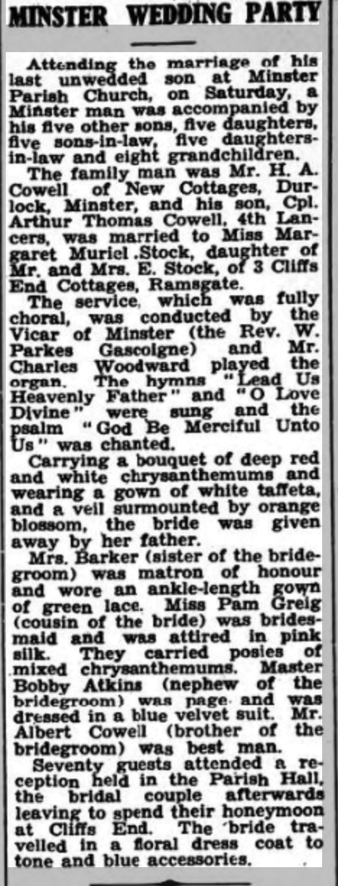
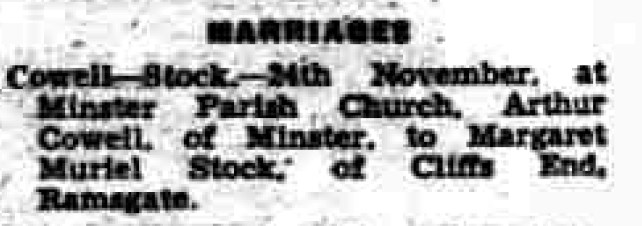
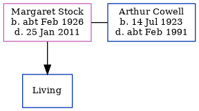

Margaret Muriel Cowell (née Stock) cFeb 1926 - 2011
[ Home ] | [ Calendar ] | [ Surnames Index ] | [ Census Index ] | [ Family History ]Margaret Stock, the wife of Arthur Thomas Cowell (the first cousin once-removed on the mother's side of Nigel Horne), was born in Dover, Kent, England c. Feb 19261,2. She married Arthur (with whom she had 1 surviving child, John E A) at St Mary the Virgin Church, Minster, Thanet, Kent, England on Nov 24, 19453.
During her life, she was living in Cliffsend, Ramsgate, Kent in 1945; and at 40 Bognor Drive, Herne Bay, Kent in 20034.
She died on Jan 25, 2011 in Herne Bay, Kent, England1.
Citations
- England & Wales Deaths 2007-2020 - Findmypast
- England & Wales births 1837-2006 - Findmypast
- England & Wales, Marriage Index: 1916-2005 Online publication - Provo, UT, USA: The Generations Network, Inc., 2009.Original data - General Register Office. England and Wales Civil Registration Indexes. London, England: General Register Office. © Crown copyright. Published by permission of the Cont
- UK, Electoral Registers, 2003-2010
Media
Thanet Advertiser 30 Nov 1945

Thanet Advertiser - 4 Dec 1945

England & Wales marriages 1837-2008 - BMD/M/1945/4/AZ/000304/080
England & Wales marriages 1837-2008 - BMD/M/1945/4/AZ/001403/139
England & Wales Deaths 2007-2020 - BMD/D/MILLEN/000354643
England & Wales births 1837-2006 - BMD/B/1926/1/AZ/001215/107
Family Tree
Generated by ged2site. Last updated on Jun 11, 2024